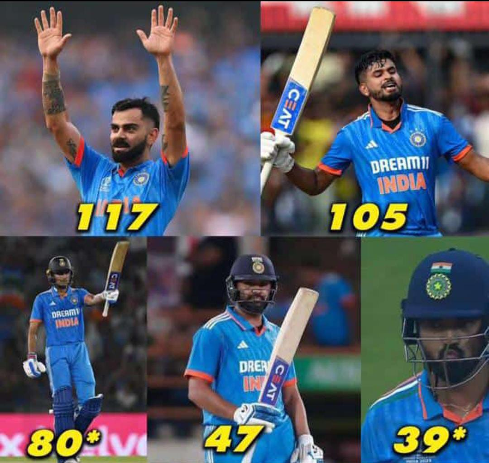
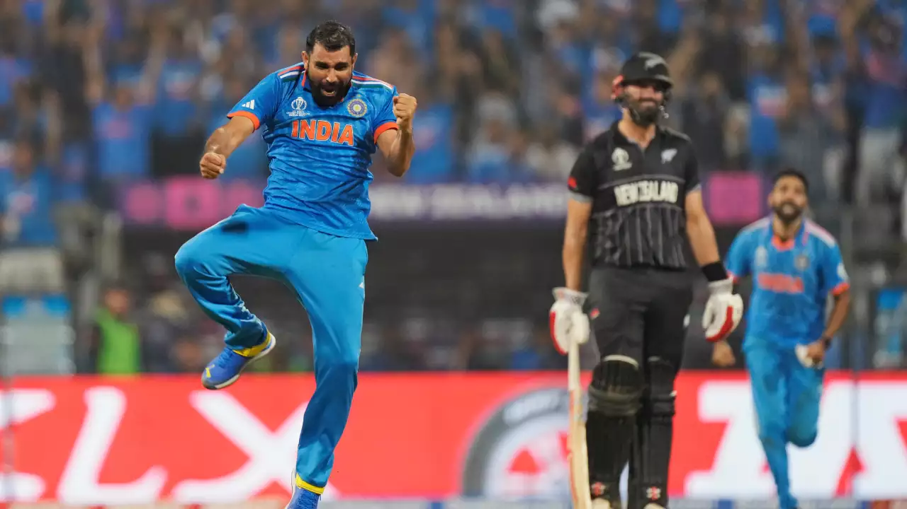

SHAMI's brilliant heroics drives India into the Finals
Shami's 7 for 57 helps India to reach the ICC Cricket World Cup final after 2011. Virat Kohli scored his record-breaking 50th ODI century - going one over Sachin Tendulkar's tally - and Mohammed Shami became the first bowler to pick three five-wicket hauls in a single edition of the 50-over World Cup to guide India to the final of the tournament.
INDIA WON 10 by 10 Matches in a row.
Venue: Wankhede Stadium, Mumbai


India won the toss and opt to bat.
India fans had a fear of NZ in knockout games, but this time it's India's show.
Asusal Captain Rohit (47) had a flying start to India and got dismissed.
Gill (80*) with Kohli(117) led ininngs to a good total.
Shreyas Iyer with magnificient fast inings scored 105 and Rahul with quick fire 39*(20 balls) led India to Comfortable and Confident total of 397 to win the match.
Shami the Super-Man in Indian side got the both openers of NZ.
But NZ skipper Kane Williamson (69) and Mitchell (134) led NZ to stood alive in the tournament for a while.
Upto this match Mitchell is only player in this tournament to score 100 against India (2 times)
Super-Man Shami came to his second spell and got these two batsman where NZ req 199 from 20 overs which was easy to score in this pitch.
Shami got the continuous breakthroughs, lone warrior phillips went for (41).
Shami finsihed match with the wicket of Ferguson.
Shami become the hero for entire 131 cr Indians with his bowling performance and secured player of the match award.